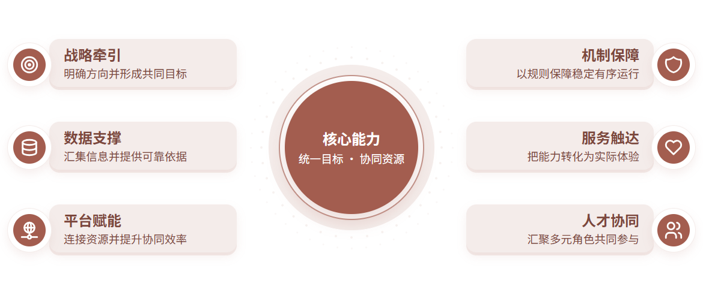
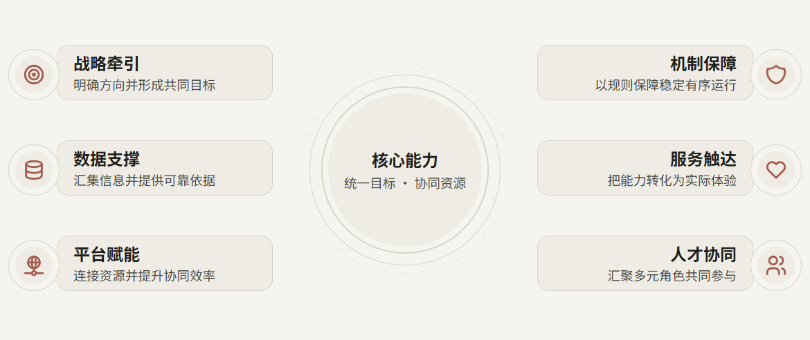
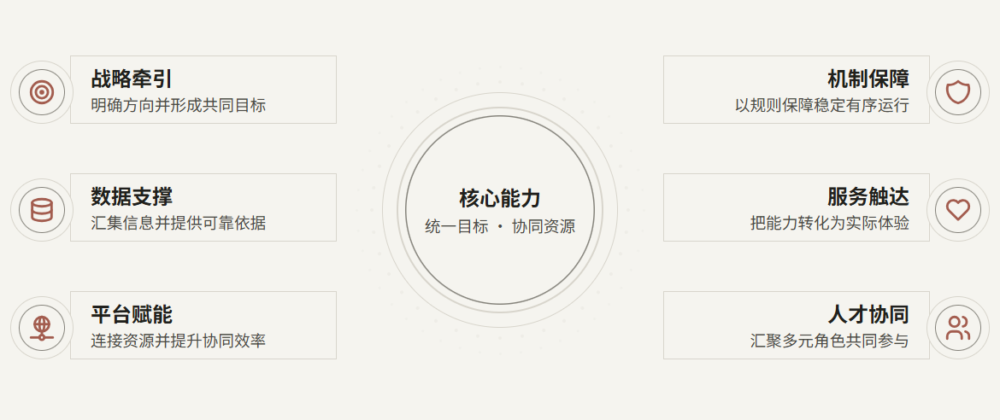

中性 Skin：色块、浅承载与线框
同一核心结构、同一文字、同一位置。B/C 是局部 HTML 样式候选，未修改核心资产，未生成 PPTX，也不是 Luna 稳定性验收。
A · 当前主色换色
调用合并后的主题入口，保留原组件的色块、阴影与白色。

B · 近背景浅承载
独立样式试验：纸色背景、浅承载面、深色文字，图标少量砖红。

C · 同背景线框
独立样式试验：承载面融入背景，以轮廓和深色文字保留层级。

数量状态检查：A · 当前主色换色 / 4 项 · B · 近背景浅承载 / 4 项 · C · 同背景线框 / 4 项 / A · 当前主色换色 / 8 项 · B · 近背景浅承载 / 8 项 · C · 同背景线框 / 8 项